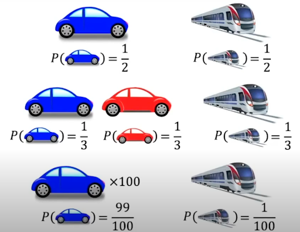
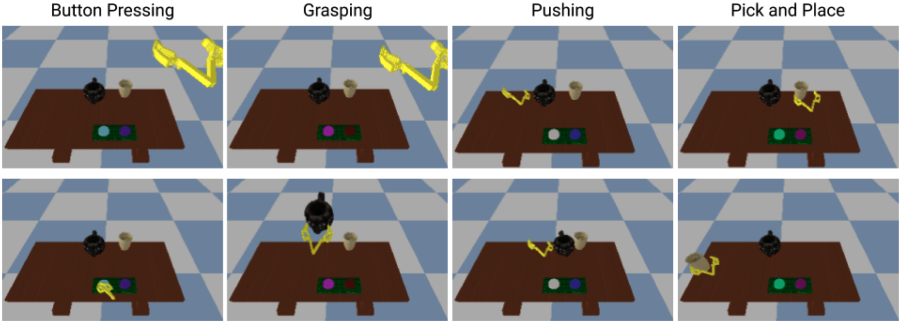

2 Human Decision Making and Choice Models
2.1 Introduction
Human preference modeling aims to capture humans’ decision making processes in a probabilistic framework. Many problems would benefit from a quantitative perspective, enabling an understanding of how humans engage with the world. While human decision-making is only somewhat understood, we can use real-world data representing the outcomes of decisions to align human-facing systems with user preferences. Through our exploration of human preference models, we will ground ourselves in building a health coaching system that can provide meal recommendations aligned with a user’s dietary needs and preferences. Examples of scenarios which can benefit from a model of how humans make choices include:
Health coaching: Humans express their preferences every time they pick lunch for consumption. Humans may have several goals related to nutrition, such as weight loss and improving concentration. We can learn how a given individual or set of individuals prefer to eat to provide personalized recommendations to help them attain their goals. This chapter will use this use case to ground human preference modeling in a real-life application.

Health coaching is a running example we use to instantiate modeling concepts discussed in this chapter. In this example, several users with various health profiles have to choose from various food options, each with varying carbohydrate, protein, and lipid contents. We employ a mini version of this problem throughout the text. Social media: Platforms have a far greater amount of content than one can consume in a lifetime, yet such products must aim to maximize user engagement. To accomplish this, we can learn what specific things people like to see in their feeds to optimize the value they gain out of their time on social media. For example, the video feed social media platform TikTok has had viral adoption due to its notorious ability to personalize a feed for its users based on their preferences.
Shopping: Retail corporations largely aim to maximize revenue by making it easy for people to make purchases. Recommendation systems on online shopping platforms provide a mechanism for curating specific items based on an individual’s previous purchases (or even browsing history) to make shoppers aware of items they may like and, therefore, purchase.
| Application | Human Preference |
|---|---|
| Computer vision: train a neural network to predict bounding boxes delineating all instances of dogs in an image | This is how humans process images by identifying the position and geometry of the things we see in them |
| Natural language processing: train a model to generate coherent text | Coherent text is itself a human-created and defined concept, and we prefer that any synthetically generated text matches that of humans |
| Computer vision: train a diffusion model to generate realistic images of nature | Humans prefer that images accurately capture the world as observed by humans, and this generative model should reflect the details that comprise that preference |
In this chapter, we will explore how one can model human preferences, including different formulations of such models, how one can optimize these models given data, and considerations one must understand to create such systems. We note that the exact assumptions we make about human preferences in this chapter differentiate the specific human preference learning problem we are considering from the discriminative and generative tasks we describe in table 1.1. We describe these assumptions in section 1.2.
2.2 Foundations of Preference Models
We introduce a framework for discussing human preferences. The different methods to model these preferences (1.3) all build upon this framework.
Axiom 1: Preference models model choice
Human preference models model the preferred choice or choices amongst a set of options. In our health coaching example, this could be modeling which meal from a set of options a person will most likely choose. An alternative framework we will explore is ranking, in which we can model an ordering of given choices from most to least desirable. It is certainly possible that there is an infinite set of options (such as in a continuous action space); in this case, our model will have to reason about a discretized set of options and may fail to capture the full space of possibilities a human would choose from in the real world.
Choices are collectively exhaustive, mutually exclusive, and finite. Human preference models must enumerate an action space, or the set of all possible choices included in a human decision. As such, we must ensure that the choices we enumerate capture the entire domain (collectively exhaustive) but are indeed distinct (mutually exclusive) choices. In our health coaching example, a person either chooses to eat chicken or fish. Choosing one does not affect the other.
A discrete set of choices is a constraint we canonically impose to ensure we can tractably model preferences and aptly estimate the parameters of preference models. This is usually sufficiently expressive to create a powerful human preference model (for example, recent generative language models have vocabulary sizes of 40,000+ and can model nearly arbitrary language sequences (Radford et al. 2018)). While in theory, one can imagine a continuous domain for choices, a discrete set fits nicely with most decision-making processes humans face. While human thought is extremely nuanced, most thoughts are expressed as discrete words or discrete decisions in every step humans take in the world.
Axiom 2: Preference captures decision-making
There are certainly cases in which human preferences don’t reflect the human decision-making process, for example if there are external factors (social, political, economic) which govern a human’s choices, or if one is explicitly choosing to go against their preferences in the context of exploration. However, human preference models will always do their best to model the ultimate decision, and we assume that they are in some way accounting for these other factors (and any lack of such accounting will result in a biased model). Human preferences are generally classified into two categories:
Revealed preferences are those one can observe retroactively from existing data. The implicit decision-making knowledge can be captured via learnable parameters and their usage in models which represent relationships between input decision attributes that may have little human interpretability, but enable powerful models of human preference. For health coaching, we may have information about which foods an individual has chosen previously in different contexts, allowing us to build a model from their decisions. Such data may be easier to acquire and can reflect real-world outcomes (since they are, at least theoretically, inherently based on human preferences). However, if we fail to capture sufficient context in such data, human preference models may not sufficiently capture human preferences.
Stated preferences are those individuals explicitly indicate in potentially experimental conditions. The explicit knowledge may be leveraged by including inductive biases during modeling (for example, the context used in a model) which are reasonable assumptions for how a human would consider a set of options.This may include controlled experiments or studies. This may be harder to obtain and somewhat biased, as they can be hypothetical or only accurately reflect a piece of the overall context of a decision. However, they enable greater control of the decision-making process.
[Talk about social choice models - the above paragraph applies but there is extra nuance e.g. preferences compounding or confounding/cancelling out]
[Talk about mechanism design to incentivise decision making matching human preferences]
Human Rationality
Modeling decision-making must also take into account the rational and irrational behaviour of humans. Therefore we consider rationality assumptions as a fundamental aspect of understanding how individuals make decisions. These assumptions provide a framework for predicting and modeling human behavior by outlining the principles that guide decision-making processes (Keisler and Lee 2003).
Perfect rationality posits that individuals always make decisions that maximize their utility. It assumes that individuals have complete information and the cognitive ability to process this information to make optimal choices (Miljkovic 2005). This assumption is often used in economic models to predict how rational agents would behave under ideal conditions. However, numerous studies have shown that this assumption frequently fails to describe actual human behavior, as individuals do not always act in ways that maximize their utility due to various constraints and biases (Miljkovic 2005). Bounded rationality, on the other hand, acknowledges that individuals operate within the limits of their information and cognitive capabilities. Decisions are made using heuristics or rules of thumb rather than through exhaustive analysis, reflecting the practical constraints of real-world decision-making (Simon 1972). This concept, introduced by Herbert Simon, recognizes the limitations of human cognitive processing and the impact of these limitations on decision-making. Simon’s theory suggests that instead of optimizing, individuals satisfy, seeking solutions or decisions that are “good enough” under the circumstances (Simon 1972). Noisy rationality assumes that decisions are influenced by random noise, resulting in probabilistic choice behavior. This means that while individuals aim to maximize their utility, random factors can lead to deviations from perfectly rational choices. This approach is useful for modeling behavior in situations where decisions are not entirely deterministic and are subject to variability (Miljkovic 2005). This probabilistic approach aligns with findings from behavioral economics and psychology, which indicate that human decision-making is often inconsistent and influenced by various random factors (Miljkovic 2005).
Understanding rationality assumptions is crucial for modeling and predicting human behavior in various decision-making scenarios. These assumptions provide the foundation for developing models that can simulate and analyze how individuals interact with one another and their environment. By incorporating different types of rationality, researchers can create more accurate and realistic models that reflect the complexities of human decision-making. This comprehensive approach enhances the predictive power of models and improves the understanding of human behavior in economic and social contexts (Miljkovic 2005; Simon 1972).
Luce’s axiom of choice (Luce 1977) and Boltzmann’s Rationality provide a probabilistic framework for modeling noisily-rational human behavior. Luce’s axiom of choice addresses the likelihood of a human selecting an option \(o\) from a set \(O\). Desirability is represented by a value function \(v : O \rightarrow \Rbb^+\), with the selection probability calculated as \(P(o) = \frac{v(o)}{\sum_{o' \in O} v(o')}\). Assuming there is an underlying reward for each option \(R(o) \in \Rbb\) such that \(v(o) = e^{R(o)}\), we get \(P(o) = \frac{e^{R(o)}}{\sum_{\bar{o} \in \mathcal{O}} e^{R(\bar{o})}}\). Essentially, “A human will act out a trajectory with a probability proportional to the exponentiated return they receive for the trajectory.” This probabilistic approach challenges the traditional assumption of perfect economic rationality, where individuals always make decisions that maximize their utility. When choices involve trajectories \(\xi \in \Xi\) (sequences of actions), the Boltzmann model (Neumann and Morgenstern 1945) is used. Here, the reward \(R\) is typically a function of a feature vector \(\phi : \Xi \rightarrow \Rbb^k\), and the probability density is given by \(p(\xi) = \frac{e^{R(\phi(\xi))}}{\int_{\Xi} e^{R(\phi(\bar{\xi}))} d\bar{\xi}}\). Boltzmann Rationality serves a critical role in human preferences and decision-making. It captures the probabilistic nature of human choices, recognizing that decisions are often noisy and influenced by various factors. This model is instrumental in preference modeling, accommodating human preferences’ inherent variability and uncertainty.
However, the Luce choice axiom and Boltzmann Rationality encounter a known issue called the “duplicates problem,” where there is no concept of similar actions (e.g., choosing between using a car or a train for transportation, with no particular preference). The probability of making the decision is 50% for either option. However, if we now have 100 cars, under Luce/Boltzmann, we would have a 99% probability of choosing a car, which is unrealistic.

To address this issue, various extensions have been proposed. One such extension is the attribute rule, which interprets options as bundles of attributes. In this rule, attributes \(X\) are associated with options, and they have desirability values \(w(x)\). An attribute intensity function \(s(x, o)\) indicates the degree to which an attribute is expressed in an option. The probability of choosing option \(o\) is calculated as:
\[P(o) = \sum_{x \in \mathcal{X}_o} \frac{w(x)}{\sum_{\bar{x} \in \mathcal{X}_o} w(\bar{x})} \cdot \frac{s(x, o)}{\sum_{\tilde{o} \in \mathcal{O}} s(x, \bar{o})}\]
This equation describes a two-step process where an attribute \(x \in X_O\) is first chosen according to a Luce-like rule and then an option \(o \in O\) with that attribute is selected using another Luce-like rule. This approach handles duplicates gracefully by effectively creating a two-layer hierarchy in choosing an option.
Boltzmann Rationality finds practical applications in various fields, particularly in reinforcement learning, where it models decision-making in uncertain environments. It also applies to trajectory selection, where the probability of a sequence of actions (trajectory) is proportional to the exponential return. These applications enhance the accuracy of models that interact with or predict human behavior, making Boltzmann Rationality a vital component of the models of interaction.
We next explore a case study to deepen our understanding of rationality: Limiting Errors due to Similar Selection (LESS) (Bobu et al. 2020). LESS takes inspiration from the attribute rule and extends it to continuous trajectories (Bobu et al. 2020). The key insight is that instead of creating “attributes”, which group together similar discrete options, it introduces a similarity metric on the space of continuous actions, thereby creating similar groupings on trajectories.
First, discussing the distinction between trajectory and feature space is important. The LESS similarity metric could be defined in trajectory space, where the trajectory is some theoretical notion of all states and actions one passes through over time. However, it is instead defined on the measured feature vector \(\phi(\xi)\) associated with the agent’s trajectory \(\xi\). Why? In practice, one can never measure the exact trajectory with perfect fidelity. The feature vector will almost necessarily map in a one-to-many fashion with trajectories. Formally, let \(\phi \in \Phi\) be the set of all possible feature vectors \(\xi \in \Xi\) the set of all trajectories. The set of feature vectors belonging to a set of trajectories \(\Xi' \subseteq \Xi\) is \(\Phi_{\Xi'}\). We begin with equation (4) and substitute our similarity metric on feature vectors of trajectories.
\[\begin{aligned} P(\xi) = \frac{e^{R(\phi(\xi))}}{\sum_{\bar{\phi} \in \Phi_{\Xi}} e^{R(\hat{\phi})}} \cdot \frac{s(\phi(\xi), \bar{\xi})}{\sum_{\hat{\xi} \in \Xi} s(\phi(\xi), \bar{\xi})} \end{aligned}\]
In this formulation, the first half of the product is simply Boltzmann equation. The probability of choosing trajectory \(\xi\) is proportional to the exponentiated reward for the agent’s measured trajectory \(\phi(\xi)\), normalized by the sum of all rewards over all possible measured trajectories. The second half of the product is a normalization factor based on how similar the current trajectory is to other trajectories in feature space. We can define the similarity function as an indicator function, where \(s(x, \xi) = 1\) only if \(x = \phi(\xi)\). That means that multiple trajectories with the same feature vector will effectively be considered a single option. Thus, we achieve the “bundling” of trajectories, in the same way that the attribute rule bundled options under different attributes.
However, setting the similarity metric as an indicator function isn’t sufficiently flexible. We want a proper metric that acts more as a continuous distance over the feature space. We instead define \(s\) to be a soft similarity metric \(s : \Phi \times \Xi \rightarrow \Rbb^+\). It has the following properties:
\(s(\phi(\xi), \xi) = \max_{x \in \phi, \bar{\xi} \in \Xi} s(x, \hat{\xi})) \forall (\xi \in \Xi)\)
Symmetric: \(s(\phi(\xi), \bar{\xi}) = s(\phi(\bar{\xi}), \xi)\)
Positive Semidefinite: \(s(x, \xi) \geq 0\)
Using this redefined similarity metric \(s\), we extend (5) to be a probability density on the continuous trajectory space \(\mathcal{E}\), as in (3).
\[p(\hat{\xi}) = \frac{\frac{e^{R(\phi(\xi))}}{\int_{\Xi} s(\phi(\xi), \bar{\xi}) d\bar{\xi}}}{\int_{\Xi}\frac{e^{R(\phi(\hat{\xi}))}}{\int_{\Xi} s(\phi(\hat{\xi}), \bar{\xi}) d\bar{\xi}}d\hat{\xi}} \propto \frac{e^{R(\phi(\hat{\xi}))}}{\int_{\Xi} s(\phi(\xi), \bar{\xi}) d\bar{\xi}}\]
Under this formulation, the likelihood of selecting a trajectory is inversely proportional to its feature-space similarity with other trajectories. This de-weights similar trajectories, which is the desired effect for our LESS model of human decision-making. This means, though, that the “trajectory bundle” of similar trajectories still has a reasonable probability of being chosen.
Axiom 3: Preference centers around utility
Human preference models are centered around the notion of utility, which can mean a reward one attains after expressing one’s preference over options.1 In health coaching, the utility, as a function of the health choices users make, may be satiety, latent promotion of overall health, or even a quantitative extension of life. Of course, humans don’t necessarily use an explicit measure of utility — frequently humans use qualitative factors such as emotion or external influence to make decision. However, we assume that the underlying utility mechanism of a human preference model still captures the final decision output from a human.
1 Note that an assumption we make in the notion of utility is that utility is a function of the frequency of choosing certain options over alternatives.
2 Note that utility is often not an observable quantity, but something our models can infer given a set of observed preferences or decisions over choices. In our running example of health coaching, the utility might be ‘satiety’, for instance, which we do not measure directly, but which we infer through the choices humans make over concrete meal options.
Utility can be interpreted as a scalar quantity representing the benefit or value an individual attains from selecting a given choice. Each choice has an associated utility. Human preference models capture both the utility of a choice (e.g. we model the utility value as a function of attributes of a given choice) and how the utilities interact to make a decision.2 We use the notation \(U_i\) as the utility corresponding to choice \(i\).
The utility of a choice is a stochastic function of the choice’s attributes. We will henceforth define utility as follows \(U_i = H_i(z_i)\) where \(z_i\) is a variable describing the attributes of choice \(i\) and \(H_i\) is the stochastic function defining this choice’s utility. As a simple example, we can use a 1-D linear stochastic function to define \(H_i\): \(U_i = H_i(z_i) = \beta z_i + \epsilon_i\), where \(\beta\) is a parameter of the model and \(\epsilon_i\) is an unobserved factor for choice \(i\). Generally, we assume that the \(\epsilon_i\) factor is a random variable following a specified distribution, such as a standard normal distribution. The attributes we use to represent a choice (a single scalar value \(z_i\) in this example) is a critical design decision in defining the human preference model. These attributes define the context our model has in representing the human behavior we wish to capture, when choice \(i\) is made. In our health coaching example, we may hope to provide the best possible diet recommendations for an individual. However, if our vector representation \(z_i\) of their choice \(i\) does not include vital information, such as allergy risks associated to the choice or ingredients which make up the choice, our model may not have enough information to properly capture the human preference.
The preferred choice is that whose corresponding utility is the largest. Given that we model utility as the underlying benefit or value a human derives from choosing a given option, intuitively, we expect a human to choose the option with the largest utility. In our example of health coaching, if we model utility as the expected increase in lifespan, we will surely opt for the choice that maximizes this notion of utility. In our example, since \(U_1 > U_2\), our model indicates that a user would opt for the burrito.
Relativity of Utility. Given the two previously defined characteristics of utility, we observe that only the relative difference in utility matters. Even if \(U_1 = 0.001\) and \(U_2 = 0.0005\), the model indicates the same outcome: a user prefers option \(1\). As such, even the scale of the utilities is irrelevant within a given set of human preference data for a given individual. In our example, we can scale the value of \(\beta\) without changing the overall outcome so long as we do not change the sign. The scale of utilities is important when comparing human preferences across datasets, or comparing the same model across different humans; since utility may be defined differently in various datasets, perhaps their exact values are not aligned in a manner which allows one to robustly compare preferences between them. A common practice to address this consideration is to standardize the utilities in each dataset based on its variance in the observed data. Furthermore, a human preference model may generate different scales of utilities across different humans (based on the inputs and representation of the human). In this case, one can standardize the utilities for each individual based on the observed variance for that human. As we can see, the relativity of utility can be both powerful (enabling us to create flexible models and efficiently optimize them) and limiting (requiring us to perform mitigations when translating models across datasets or individuals. Still, we find the notion of utility necessary to model human preferences as it provides a quantitative value we can use to model human decisions.
As a concrete model of meal recommendation in health coaching, let us suppose that we have three choices:
A burrito with rice, beans, and cheese.
French fries covered in mayonnaise.
A rice bowl with beans and chicken.
If we design \(z_i\) to be 1D, for example:
\(z_1 = 1\) for the burrito since this is a somewhat balanced meal that may help prolong the lifespan, which a user prefers.
\(z_2 = -1\) since this is unhealthy due to being deep fried, including saturated fats, and potentially reducing lifespan.
\(z_3 = 1\) since a rice bowl is another healthy meal.
After observing the choices of a user who likes to eat healthily, we might learn that \(\beta = 1\) is the best parameter for this model, and maybe we assume that \(\epsilon \sim \Nc(0, 1)\). Then, this model implies that \(U_1 = 1 \cdot 1 + 0.03 = 1.03\), \(U_2 = 1 \cdot -1 + (-0.07) = -1.07\), \(U_3 = 1 \cdot 1 + (0.02) = 1.02\), which means that the user, for whom \(\beta = 1\) is the learned parameter, they would prefer the first meal, with the third meal as a close second option.
If we design \(z_i\) to be 3D, to indicate the carbohydrate, protein, and fat content of each meal, then for example:
\(z_1 = (1, 1, 0.1)\) for the burrito
\(z_2 = (1, 0, 1)\) for the fries
\(z_3 = (1, 1, 0.2)\) for the rice bowl.
After observing the choices of a user who likes to eat healthy, we might learn that \(\beta = (1, 1, -1)\) is the best parameter for this model, and maybe we assume that \(\epsilon \sim \Nc(0, 1)\). Then, this model implies that \(U_1 = (1, 1, 0.1) \cdot (1, 1, -1) + 0.01 = 1.91\), \(U_2 = (1, 0, 1) \cdot (1, 1, -1) + 0.03 = 0.03\), \(U_3 = (1, 1, 0.2) \cdot (1, 1, -1) - 0.07 = 1.73\), which means that the user prefers meals 1 and 3, which again have the best utility, but in this multi-dimensional representation of \(z_i\), we start understanding how the two preferred meals are related (low fat and high protein).
2.3 Models of Individual Choices
After exploring motivations for preference learning and the framework we use to characterize human preferences to enable modeling, we now expand on the common probabilistic methods used to model human preference tasks. We will instantiate these models for our real-world health coaching application throughout as a pedagogical example. Specifically, we can define the following domain for meal choices: \(z_i, \beta \in \Zbb^3\), where \(z_i\) defines the representation of a meal option with the three dimensions representing the carbohydrate, protein, and lipid macronutrient content of the meal, respectively, all measured in grams. \(\beta\) is a parameter of the model. This simple representation will allow us to consider how different probabilistic frameworks for human preferences can model a user’s meal preferences. The information representation we instantiate here can accommodate scalar and high-dimensional vectors. While we use a mixture of integer and real-valued vectors in this simple example, we refer the reader to code in the practicum section for an example where vectors are all real-valued. If we let \(z = [20, 15, 3]\) and \(\beta = [0.2, 1, -3]\). This corresponds to a meal with 20g carbohydrates, 15g protein, and 3g lipids. In the following sections, we discover how to learn the parameter \(\beta\) and how to predict \(y\) for this meal, which indicates whether the user chooses it or refuses it.
2.3.1 Data Collection
Pairwise Sampling
In pairwise sampling, participants compare two options simultaneously to determine which is preferred. The goal is to understand relative preferences between pairs of items. This method is frequently used in preference and choice studies to gather detailed preference data. Two key models used in pairwise sampling are the Thurstonian and Bradley-Terry models (Cattelan 2012). The Thurstonian model assumes each item \(i\) has a true score \(u_i\) following a normal distribution. The difference \(d_{ij} = u_i - u_j\) is also normally distributed. The probability that item \(i\) is preferred over item \(j\) is given by \(P(i \succ j) = \Phi \left( \frac{u_i - u_j}{\sqrt{2\sigma^2}} \right)\), where \(\Phi\) is the cumulative normal distribution function. The denominator \(\sqrt{2\sigma^2}\) is the standard deviation of the difference \(d_{ij} = u_i - u_j\) when \(u_i\) and \(u_j\) are normally distributed with variance \(\sigma^2\)(Cattelan 2012). The Bradley-Terry model defines the probability of preference based on latent scores \(\beta_i\) and \(\beta_j\). The probability that item \(i\) is preferred over item \(j\) is \(P(i \succ j) = \frac{e^{\beta_i}}{e^{\beta_i} + e^{\beta_j}}\). This model is used to estimate relative strengths or preferences based on latent scores. (Cattelan 2012).
Rank-Order Sampling
Rank-order sampling methods enable analysis of human preferences by asking participants to rank a set of items from most to least preferred. This approach is widely used in voting systems, market research, and psychological studies to understand the overall preference ordering among a set of items. Rank-order sampling offers comprehensive preference data, capturing detailed information about the relative ranking of multiple items. This richness makes them suitable for various applications, including market research, voting systems, sports competitions, and recommender systems. However, these models can be more complex and time-consuming for participants compared to pairwise comparisons, and they impose a higher cognitive load, especially with large sets of items. Additionally, participants may show inconsistencies when ranking many items (Ragain and Ugander 2019).
Rating-Scale Sampling
Rating-scale sampling is a method in which participants rate items on a numerical scale to measure the intensity of preference or attitude towards items. These models are commonly used in surveys, product reviews, and psychological assessments to gather detailed information on how participants feel about various subjects. The Likert scale is a widely used rating-scale model. In this approach, participants rate items on a fixed-point scale, typically ranging from 1 to 5 or 1 to 7, to measure levels of agreement or satisfaction. For instance, a Likert scale might ask participants to rate their agreement with statements such as “Strongly Disagree” to “Strongly Agree” (Harpe 2015). This method is prevalent in survey research, customer satisfaction studies, and attitude measurement. Another key model is the continuous rating scale, where participants mark a point on a continuous line to indicate their preference or attitude. This provides a more nuanced measure compared to discrete scales. For example, participants might indicate their satisfaction on a line ranging from “Very Unsatisfied” to “Very Satisfied” (Harpe 2015). This model is used in detailed feedback mechanisms, user experience studies, and fine-grained preference measurements.
Rating-scale sampling offers several advantages. They are simple for participants to understand and use, provide rich data on the intensity of preferences, and are flexible enough for various types of measurements (e.g., agreement, satisfaction). Moreover, the data collected can be easily analyzed using standard statistical methods (Harpe 2015).
Applications include data collection on opinions, attitudes, and behaviors; in product reviews to measure customer satisfaction and product quality; in psychological assessments to evaluate mental states, personality traits, and attitudes; and in user experience studies to understand user satisfaction and usability of products (Harpe 2015). However, rating-scale sampling methods also have limitations. Ratings can be influenced by personal biases and interpretations of scales, leading to subjectivity. There is a central tendency bias, where participants may avoid extreme ratings, resulting in a clustering of responses around the middle. Different participants might interpret scale points differently, and fixed-point scales may not capture the full nuance of participants’ preferences or attitudes (Harpe 2015).
Best-Worst Scaling
Best-Worst Scaling (BWS) is a powerful method for understanding preferences and the relative importance of different items. In BWS, participants are presented with a set of items and are asked to identify the most and least preferred options. This method helps to gather detailed preference data, providing more nuanced insights than traditional ranking or rating systems. The primary objective of BWS is to discern the relative importance or preference of items within a set, making it widely applicable in various fields such as market research, health economics, and social sciences (Campbell and Erdem 2015).
A key method within BWS is MaxDiff Analysis, which involves presenting participants with sets of items and asking them to select the best and worst options. This approach yields richer data by identifying extremes in preferences, offering a clearer picture of the relative importance of each item. For instance, in a product development context, MaxDiff Analysis can help identify the most and least important features according to consumer preferences (Campbell and Erdem 2015).
The advantages of Best-Worst Scaling are significant. It provides rich data on the relative importance of items, helps clarify preferences, reduces biases found in traditional rating scales, and results in utility scores that are easy to interpret. BWS is particularly useful in market research for understanding consumer preferences, in health economics for evaluating patient treatment preferences, in social sciences for studying the importance of social issues, and in product development for identifying key features driving consumer choices (Campbell and Erdem 2015).
However, BWS also has limitations, including increased complexity and cognitive load for participants compared to simpler rating scales, potential scale interpretation differences among participants, and design challenges to avoid biases. Additionally, differences in how participants interpret the scale can introduce variability, and the design of BWS studies requires careful consideration to avoid biases, such as the order effect or the context in which items are presented.
Multiple-Choice Sampling
Multiple-choice sampling models are widely used in various fields such as voting systems, surveys, and market research to understand the preferred choice among a set of alternatives. These models involve participants selecting one option from a set of alternatives, providing insights into the most favored options.
Multiple-choice sampling methods offer several advantages. They are simple for participants to understand and reflect on realistic decision-making scenarios where individuals choose one option from many. These models are versatile and can be applied in various applications, from voting to market research, providing clear preferences directly from the participants’ choices. It is particularly useful in complex choice scenarios such as mode of transportation, where choices are not independent (Bolt and Wollack 2009).
However, multiple-choice sampling also has limitations. It often relies on simplistic assumptions such as the independence of irrelevant alternatives (IIA), which may not always hold true. Additionally, these models can place a cognitive load on participants, especially if the number of choices is large, leading to decision fatigue. This method may also fail to capture the variation in preferences among different individuals, as it typically records only the most preferred choice without accounting for the relative importance of other options.
2.3.2 Data Interpretation
Binary Choice Model
is centered around one specific user option. The model predicts, for that option, after observing user choices in the past, whether that option will be chosen or not. Specifically, if we are looking at a certain choice, we use binary variable \(y \in \{0, 1\}\) to represent whether that choice will be picked or not by the user in the next phase of selection. Since \(\Pbb(y = 0) = 1 - \Pbb(y = 1)\), we only need to model \(\Pbb(y = 1)\) which we will denote as \(P\).
We can use a linear model represented by the parameter \(\beta\) we have already defined. Since utility is a stochastic function of the choice attributes, we will represent our utility as \(U = \beta^\top z + \epsilon\). We can formally model \(y\) as a function of the utility of the positive choice: \(y = \mathds{1}[U>0]\).
We explore two cases based on the choice of distribution for the unobserved random variable \(\epsilon\). If \(\epsilon \sim \text{Logistic}\), then \(\Pbb(\epsilon < a) = \frac{1}{1 + \exp^{-a}}\). The probability \(P\) can be modeled as: \[\begin{aligned} P & = \Pbb(U > 0) = \Pbb(\beta^\top z + \epsilon > 0) = \Pbb( \epsilon > -\beta^\top z) = 1 - \Pbb( \epsilon < -\beta^\top z) = 1 - \frac{1}{1 + \exp^{\beta^\top z}} \\ & = \frac{1 + \exp^{\beta^\top z}}{1 + \exp^{\beta^\top z}} - \frac{1}{1 + \exp^{\beta^\top z}} = \frac{\exp^{\beta^\top z}}{1 + \exp^{\beta^\top z}} = \frac{1}{1 + \exp^{-\beta^\top z}} \end{aligned}\]
In the health coaching example, using this logistic model, we can compute the probability that an individual would choose this meal over no meal: \(P = \frac{1}{1 + \exp^{-(4 + 15 - 9)}} = 0.99995\). Therefore, the model predicts a high probability that the user would choose the meal over the no-meal option.
On the other hand, if \(\epsilon \sim \Nc(0, 1)\), then \(\Pbb(\epsilon < a) = \Phi(a)\), where \(\Phi(a)\) is the cumulative distribution function of the standard normal distribution. The probability \(P\) is modeled as:
\[P = \Pbb(U > 0) = \Pbb(\beta^\top z + \epsilon > 0) = \Pbb( \epsilon > -\beta^\top z) = \Pbb( \epsilon < \beta^\top z) = \Phi(\beta^\top z)\]
In the same health coaching example, we can compute the probability that an individual would choose this meal over no meal: \(\Phi(4 + 15 - 9) = 1\). This model also predicts that the user will most likely take the meal!
Bradley-Terry Model
The Bradley-Terry (BT) model introduces a framework to model the utility of choice over all others (a multipronged prediction of overall choices, not just a binary prediction over one choice), given their attribute vectors (Bradley and Terry 1952b). Given information about all available operations, this is a general yet powerful method for modeling human preferences. The core idea in this model is to compare utilities of all items at once to model the probability of a user’s actions and, therefore, their preferences. In the BT model, we have a discrete set of \(J\) choices \(i \in \{1, 2, \dots, J\}\), each with an attribute representation \(z_i \in \Zbb^n\) (where \(n\) is the dimensionality of the representation). Each choice can also have its unique random noise variable representing the unobserved factor, although we can also choose to have all choices’ unobserved factors follow the same distribution (e.g. independent and identically distributed, or iid).
We keep the assumption from previous sections that the utility \(U_i\) of choice \(i\) is also a linear stochastic function where the noise is sampled from the specified distribution: \(U_i = \beta^\top z_i + \epsilon_i\). The noise is represented as an extreme value distribution, although we can choose alternatives such as a multivariate Gaussian distribution: \(\epsilon \sim \Nc(0, \Sigma)\). If \(\Sigma\) is not a diagonal matrix, we effectively model correlations in the noise across choices, enabling us to avoid the iid assumption if necessary. In the case of the extreme value distribution, we model the probability of a user preferring choice \(i\), which we denote as \(P_i\) as \(P_i = \exp(\beta^\top z_i)/Z\) where \(Z = \sum_{j = 1}^{J} \exp(\beta^\top z_j)\).
We revisit the health coaching example. Denote two choices, where \(z_1 = [20, 15, 3]\) is the choice from the previous example. Still, we now have a second choice \(z_2 = [60, 20, 7]\) (which seems to be a very carbohydrate-heavy meal and potentially a larger meal overall). We will also assume we choose an extreme value distribution to model the unobserved factors, which are sampled i.i.d. Then, we have \(\beta^\top z_1 = 10\) and \(\beta^\top z_2 = 11 \Rightarrow P_1 = \frac{1}{1 + \exp(1)} = 0.2689\). Since there are only two choices, the probabilities \(P_1\) and \(P_2\) must sum to \(1\). Therefore, we can calculate \(P_2\) as \(P_2 = 1 - P_1 = 1 - 0.2689 \approx 0.7311\). Our model predicts that choice 2 is more favorable between these two options.
Ordered Preferences Model
In all previous examples, we have assumed that we have no information on any explicit ordering of the available options a human can choose from: all choices were treated as independent by the model. The model aims to capture how an individual chooses between them. However, in many cases, we may introduce an inductive bias based on information about the options. For example, in a study for stated preferences, a user may be able to choose from intricately dependent options such as very poor, poor, fair, good, and great. In this case, it can be useful to include this bias in our model to represent a human’s decision-making process better. For such cases, instead of comparing choices against alternatives, we can focus on a single example and use additional parameters to define classification criteria based on the utility determined by the model. Formally, let us suppose we have a single example with attributes \(z_i\), and wish to know which of \(J\) predefined options an individual will choose from. We can define \(J - 1\) parameters, which act as thresholds on the utility computed by \(U_i = H(z_i)\) to classify the predicted choice between these options. For example, if there are 3 predefined options, we can define parameters \(a, b \in \Rbb\) such that \[y_i = \begin{cases} 1 & U < a \\ 2 & a \le U < b \\ 3 & \text{else} \end{cases}\]
1. Logistic Distribution
From a probabilistic perspective, we can use our cumulative distributions as before to model the probability that a person will choose a given option. Continuing with our linear utility function \(U_i = \beta^\top z_i + \epsilon_i\), we can start with the setting that we assume unobserved factors follow a logistic distribution and focus on the first case: \[\Pbb(y_i = 1) = \Pbb(U < a) = \Pbb(\beta^\top z + \epsilon < a ) = \Pbb( \epsilon < a - \beta^\top z) = \frac{1}{1 + \exp(\beta^\top z - a)}\]
Extending this method to the second case, where we estimate the probability of the utility falling within a specific interval: \[\begin{aligned} \Pbb(y_i = 2) & = \Pbb(a \le U < b) = \Pbb(a - \beta^\top z \le \epsilon < b - \beta^\top z) = \frac{1}{1 + \exp(\beta^\top z - b)} - (1 - \Pbb( \epsilon < a - \beta^\top z) ) \\ & = \frac{1}{1 + \exp(\beta^\top z - b)} - (1 - \frac{1}{1 + \exp(\beta^\top z - a)} ) = \frac{1}{1 + \exp(\beta^\top z - b)} - \frac{1}{1 + \exp(a - \beta^\top z)} ) \\ \end{aligned}\]
The final case follows the form of the inverse of the first case:
\[\Pbb(y_i = 3) = \Pbb(U > b) = \Pbb(\beta^\top z + \epsilon > b ) = \Pbb( \epsilon > b - \beta^\top z) = 1 - \Pbb( \epsilon < b - \beta^\top z) = \frac{1}{1 + \exp(\beta^\top z - b)}\]
2. Normal Distribution
In the case of modeling unobserved factors with a standard normal distribution, we have: \[\begin{split} \Pbb(y_i = 1) & = \Pbb(U < a) = \Pbb(\beta^\top z + \epsilon < a ) = \Pbb( \epsilon < a - \beta^\top z) = \Phi(a - \beta^\top z) \\ \Pbb(y_i = 2) & = \Pbb(a \le U < b) = \Pbb(a - \beta^\top z \le \epsilon < b - \beta^\top z) = \Phi(b - \beta^\top z) - \Phi(a - \beta^\top z) \\ \Pbb(y_i = 3) & = \Pbb(U > b) = 1 - \Phi(b - \beta^\top z) \end{split}\]
In our health coaching example, the derivation above yields three exact expressions for computing the probability of choosing each of our meals. Each computation involves the normal cumulative distribution function as seen for the binary choice model with standard normal for \(\epsilon\) after parameters \(a\) and \(b\) are learned (section 1.4).
Plackett-Luce Model
In other cases, we may need an even more general framework combining elements of the BT model and ordered preferences. Specifically, we can model an open-ended ranking of the available options in a similar probabilistic framework. To do so, we can leverage the Plackett-Luce (PL) Model, in which we jointly model the full sequence of choice ordering. (Plackett 1975)
The general form models the joint distribution as the product of conditional probabilities, where each is conditioned on the preceding ranking terms. Given an ordering of \(J\) choices \(\{Y_1, Y_2, \dots, Y_J\}\) where \(Y_1\) is the first selection, \(Y_2\) is the second, and so on, we decompose the joint probability into its respective conditionals. To compute the conditional probabilities, we can use the same method as the BT model, using a softmax to produce valid conditional distributions for each element of the sequence: \[\Pbb(Y_1, Y_2, \dots, Y_J) = \Pbb(Y_1) \cdot \Pbb(Y_2 | Y_1) \cdot \dots \cdot \Pbb(Y_J | Y_1, Y_2, \dots Y_{J - 1}) = \prod_{i = 1}^J \frac{\exp(\beta^\top z_i)}{\sum_{j \ge i} \exp(\beta^\top z_j)}\]
An interesting property of the PL Model is that in the naive case of only ordering a single choice, it is equivalent to the pairwise preference formulation of the BT model.
Exercise (Health coaching example): In our application, if we have \(3\) choices (burrito (B), fries (F), rice bowl (R)), we can let \(Y_1, Y_2, Y_3\) be variables to which we assign meals in a one-to-one manner to establish a ranking.
One of the possible ranking assignments is \(Y_1=B, Y_2=F, Y_3=R\). How many assignments are there in all, and what are they explicitly?
What would one expect the sign to be, out of \(\{\leq, \geq, =\}\) in the following expression? (Hint: healthier meals should be placed earlier in the ranking.) \[\Pbb(Y_1=F, Y_2=R, Y_3=B) \ \ \_\_\ \ \Pbb(Y_1=R, Y_2=B, Y_3=F)\]
Ideal Point Model
An observation one can make is that we have strictly used linear functions to represent the utility. However, in the case of vector representations of choice attributes and the individual, one can exploit vector geometry to compute this utility value. The Ideal Point Model does this by using distance functions to compute utility for individual-choice pairs (Huber 1976). Formally, with our vector representation \(z_i\) of choice \(i\) and a vector \(\textbf{v}_n\) representing an individual \(n\), we can use a distance function to model a stochastic utility function, keeping the notion of unobserved factors following a specified distribution: \(U_{n, i} = \texttt{dist}(z_i, \textbf{v}_n) + \epsilon_{n, i}\). We continue with our framework of a human’s preference following the choice corresponding to the maximum utility: \(y_{n, i} = \mathds{1}[U_{n, i} > U_{n, j}\ \forall i \ne j]\). The intuition supporting this type of model is that vectors exist in a shared \(n\)-dimensional space, and as such we can use geometry to match choices whose representations are closest to that of a given individual.
An observation with this model type is that it can often result in faster learning compared to non-geometric approaches (Jamieson and Nowak 2011; Tatli, Nowak, and Vinayak 2022). However, it carries the added burden of having to specify a distance metric. Certain distance metrics, such as Euclidian distance or inner product, can easily be biased by the scale of vectors. A distance measure such as cosine similarity, which compensates for scale by normalizing the inner product of two vectors by the product of their magnitudes, can mitigate this bias yet may discard valuable information encoded by the length of the vectors. Beyond the distance metric alone, this model places a strong inductive bias that the individual and choice representations all share a common embedding space. In some contexts, this can be a robust bias to add to the model (Greiner 2005), but it is a key factor one must take into account before employing such a model, and is a key design choice for modeling.
Health coaching example: vector representations may indeed be useful as an individual’s representation can capture the macronutrient proportions and volumes they wish to consume, enabling a distance metric such as inner product to be a powerful tool. This model also starts capturing user properties (e.g. a user may be more into working out, another into lowering anxiety and another into gaining weight) and implicitly the commonalities between user characteristics start being captured, akin to a recommendation system (Roy and Dutta 2022). However, in other domains and formulations, where perhaps user profiles are not as explicit, this may certainly hinder performance and make learning human preferences difficult.
2.4 Parameter Learning
With an understanding of the various techniques we can use to model human preferences, we can now create robust models which utilize context attributes about the options an individual has in front of them and model their choices. However, these models on their own are powerless; their parameters are initialized randomly and we must fit the models to the actual human choice data!
Each of the models we have studied contain distinct parameters which aim to capture human preferences; for example \(\beta\) is a parameter vector containing variables which represent a linear function to compute utility given a choice’s attributes. We can also choose to represent stochastic utility functions or embedding functions for Ideal Point Models as neural networks. But how can we compute the optimal values of these parameters?
In this section, we give the reader an overview of the different methods available to tune human preference model parameters using given data. We refer the reader to (Casella and Berger 1990; Bock et al. 2015) for first-principle derivations of these methods and a deeper dive into their theoretical properties (convergence, generalization, data-hungriness, etc.).
A common and powerful approach for computing the parameters of a model is maximum likelihood estimation (Casella and Berger 1990; Bock et al. 2015). The likelihood of a model is the probability of the observed data given the model parameters; intuitively we wish to maximize this likelihood, as that would mean that our model associates observed human preferences in the data with high probability. We can formally define the likelihood for a model with parameters \(\beta\) and a given data point \((z_i, y_i)\) as: \[\Lc(z_i, y_i; \beta) = \Pbb(y = y_i | z_i; \beta)\]
Assuming our data is independent and identically distributed (iid), the likelihood over the entire dataset is the joint probability of all observed data as defined by the model: \[\Lc(z, Y; \beta) = \prod_{i = 1}^J \Pbb(y = y_i | z_i; \beta)\]
In our very first example of binary choice with logistic noise, this was simply the model’s probability of the observed preference value: \[\Lc(z_i, y_i; \beta) = \frac{1}{1 + \exp^{-\beta^\top z}}\]
In the same case with noise following a standard normal distribution, this took the form: \[\Lc(z_i, y_i; \beta) = \Phi(\beta^\top z)\]
Fortunately, in these cases, there are straightforward methods for parameter estimation: logistic regression and probit regression (binary or multinomial, depending on the model), respectively. We can use ordinal regression to estimate the model’s parameters for our ordered preference model.
Generally, the objective function commonly found in parameter learning can be optimized with stochastic gradient descent (SGD) (Ruder 2016). We can define an objective function as the likelihood to maximize this objective. Since SGD minimizes a given objective, we must negate the likelihood, which ensures that a converged solution maximizes the likelihood. SGD operates by computing the gradient of the objective with respect to the parameters of the model, which provides a signal of the direction in which the parameters must move to maximize the objective. Then, SGD makes an update step by subtracting this gradient from the parameters (most often with a scale factor called a learning rate), to move the parameters in a direction which minimizes the objective. When the objective is the negative likelihood (or sometimes negative log-likelihood for convenience or tractability), the result is an increase in the overall likelihood.
In the case of logistic and Gaussian models, SGD may yield a challenging optimization problem as its stochasticity can lead to noisy updates, for example, if certain examples or batches of examples are biased. Mitigations include batched SGD, in which multiple samples are randomly sampled from the dataset at each iteration, learning rates, which reduce the impact of noisy gradient updates, and momentum and higher-order optimizers which reduce noise by using movering averages of gradients or provide better estimates of the best direction in which to update the gradients. Some models, such as those that use neural networks, may, in fact, be intractable to estimate without a method such as SGD (or its momentum-based derivatives). For example, neural networks with many layers, non-linearities, and parameters can only be efficiently computed with gradient-based methods.
2.4.1 Reward Learning with Large Language Models
Taking a step away from explicitly modeling human bias and preference, we consider applying a deep learning approach to state-of-the-art language models. We begin by introducing the concepts of foundation models and alignment. A foundation model (Bommasani et al. 2021) in machine learning typically refers to a large and pre-trained neural network model that serves as the basis for various downstream tasks. In natural language processing, models like GPT-3, Llama, and BERT are considered foundation models. They are pre-trained on a massive corpus of text data, learning to understand language and context, and are capable of various language-related tasks such as text classification, language generation, and question answering. Foundation models are important because they alleviate the need to train massive neural networks from scratch, a compute and data expensive endeavor. However, a raw foundation model, trained on a pretraining objective such as a language modeling objective, is not useful on its own. It must be aligned to respond correctly based on human preferences.
In short, alignment for foundation models is the process by which model behavior is aligned with human values, ethics, and societal norms. Large Language Models (LLMs) are a foundation model for natural language processing. They are trained using a next-word prediction objective, allowing them to generate coherent language. A simple way to align a Large Language Model is to train it to follow instructions in a supervised way, using instruction-response pairs curated by hand. However, this limits the upper limit of LLM performance to the performance of the annotators’ writing abilities. This type of annotation is also expensive.
An alternative, more promising approach is to train LLMs using reinforcement learning, potentially enabling them to surpass human-level performance. The main challenge with this method lies in defining an explicit reward function for generating free-form text. To address this, a reward model (RM) can be trained based on human preferences, providing a mechanism to score the quality of the generated text. This approach, known as Reinforcement Learning from Human Feedback (RLHF), leverages human feedback to guide model training, allowing LLMs to better align with human expectations while continuously improving performance.

The Llama2 reward model (al. 2023) is initialized from the pretrained Llama2 LLM. In the LLM, the last layer is a mapping \(L: \Rbb^D \rightarrow \Rbb^V\), where \(D\) is the embedding dimension from the transformer decoder stack and \(V\) is the vocabulary size. To get the RM, we replace that last layer with a randomly initialized scalar head that maps \(L: \Rbb^D \rightarrow \Rbb^1\). It’s important to initialize the RM from the LLM it’s meant to evaluate. This is because:
The RM will have the same “knowledge” as the LLM. This is particularly useful if evaluating things like “does the LLM know when it doesn’t know?”. However, in cases where the RM is simply evaluating helpfulness or factuality, it may be useful to have the RM know more.
The RM is on distribution for the LLM - it is initialized in a way where it semantically understands the LLM’s outputs.
An RM is trained with paired preferences, following the format: \[\begin{aligned} \langle prompt\_history, response\_accepted, response\_rejected \rangle \end{aligned}\] Prompt_history is a multiturn history of user prompts and model generations, response_accepted is the preferred final model generation by an annotator, and response_rejected is the unpreferred response. The RM is trained with a binary ranking loss with an optional margin term m(r), shown in equation (7). There is also often a small regularization term added to center the score distribution on 0. \[\Lc_{\text{ranking}} = -\log(\sigma(r_\theta(x,y_c) - r_\theta(x,y_r) - m(r)))\] The margin term increases the distance in scores specifically for preference pairs annotators rate as easier to separate.
| Significantly | Better | Slightly | Negligibly | |
| Better | Better | Better / Unsure | ||
| Margin Small | 1 | 2/3 | 1/3 | 0 |
| Margin Large | 3 | 2 | 1 | 0 |

It may seem confusing how the margins were chosen. It’s primarily because the sigmoid function, which is used to normalize the raw reward model score, flattens out beyond the range of \([-4, 4]\). Thus, the maximum possible margin is eight.
When training or using a reward model, watching for the following is important:
LLM Distribution Shift: With each finetune of the LLM, the RM should be updated through a collection of fresh human preferences using generations from the new LLM. This ensures that the RM stays aligned with the current distribution of the LLM and avoids drifting off-distribution.
RM and LLM are coupled: An RM is generally optimized to distinguish human preferences more efficiently within the specific distribution of the LLM to be optimized. However, this specialization poses a challenge: such an RM will underperform when dealing with generations not aligned with this specific LLM distribution, such as generations from a completely different LLM.
Training Sensitivities of RMs: Training RMs can be unstable and prone to overfitting, especially with multiple training epochs. It’s generally advisable to limit the number of epochs during RM training to avoid this issue.
The industry has centered around optimizing for two primary qualities in LLMs: helpfulness and harmlessness (safety). There are also other axes such as factuality, reasoning, tool use, code, multilingual, and more, but these are out of scope for us. In the Llama2 paper, preference data was collected from humans for each quality, with separate guidelines. This presents a challenge for co-optimizing the final LLM towards both goals.
Two main approaches can be taken for Reinforcement Learning from Human Feedback (RLHF) in this context:
Train a unified reward model that integrates both datasets.
Train two separate reward models, one for each quality, and optimize the LLM toward both.
Option 1 is difficult because of the tension between helpfulness and harmlessness. They trade off against each other, confusing an RM trained on both. The chosen solution was option 2, where two RMs are used to train the LLM in a piecewise fashion. The helpfulness RM is used as the primary optimization term, while the harmlessness RM acts as a penalty term, driving the behavior of the LLM away from unsafe territory only when the LLM veers beyond a certain threshold. This is formalized as follows, where \(R_s\), \(R_h\), and \(R_c\) are the safety, helpfulness, and combined reward, respectively. \(g\) and \(p\) are the model generation and the user prompt: \[\begin{aligned} R_c(g \mid p) = \begin{cases} R_s(g \mid p) & \text{if } \text{is\_safety}(p) \text{ or } R_s(g \mid p) < 0.15 \\ R_h(g \mid p) & \text{otherwise} \end{cases} \end{aligned}\]
There are several open issues with reward models alluded to in the paper. For example, how best to collect human feedback? Training annotators and making sure they do the correct thing is hard. What should the guidelines be? Another question is whether RMs can be made robust to adversarial prompts. Last but not least, do RMs have well-calibrated scores? This matters for RLHF - pure preference accuracy isn’t enough.
2.4.2 Reward Learning in Robotics
To help set up our basic reward learning problem, consider a user and a robot. The user’s preferences or goals can be represented by an internal reward function, R(\(\xi\)), which the robot needs to learn. Since the reward function isn’t explicit, there are a variety of ways that the robot can learn this reward function, which we will discuss in the next section. An example method of learning a reward function from human data is using pairwise comparison. Consider the robot example from section one, but now, the robot shows the human two possible trajectories \(\xi_A\) and \(\xi_B\) as depicted in the diagram below.

The user is show both the trajectories above and asked to rank which one is better. Based on iterations of multiple trajectories and ranking, the robot is able to learn the user’s internal reward function. There quite a lot of ways that models can learn a reward function from human data. Here’s a list (Myers et al. 2021) of some of them:
Pairwise comparison: This is the method that we saw illustrated in the previous example. The robot is able to learn based on a comparison ranking provided by the user.
Expert demonstrations: Experts perform the task and the robot learns the optimal reward function from these demonstrations.
Sub-optimal demonstrations: The robot is provided with demonstrations that are not quite as good as the expert demonstrations but it is still able to learn a noisy reward function from the demonstrations.
Physical Corrections: While the robot is performing the task, at each point in its trajectory (or at an arbitrary point in its trajectory) its arm is corrected to a more suitable position. Based on these corrections, the robot is able to learn the reward function.
Ranking: This method is similar to pairwise comparison but involves more trajectories than 2. All the trajectories may have subtle differences from each other, but these differences help provide insight to the model.
Trajectory Assessment: Given a single trajectory, the user rates how close it is to optimal, typically using a ranking scale.
Each of these methods allows the robot to refine its understanding of the user’s reward function, but their effectiveness can vary depending on the application. For instance, expert demonstrations tend to produce more reliable results but may not always be feasible in everyday tasks. Pairwise comparison and ranking methods offer more flexibility but might require a higher number of iterations.
2.4.3 Reward Learning with Meta Learning
Learning a reward function from human preferences is an intricate and complicated task. At its core, this task is about designing algorithms that can capture what humans value based on their elicited preferences. However, due to the nuanced and multifaceted nature of human desires, learning reward functions from human can be a difficult task. Therefore, meta-learning rewards may be considered to facilitate the reward learning processes. Meta-learning, often referred to as “learning to learn,” aims to design models that can adapt to new tasks with minimal additional efforts. We discuss paper (Hejna III and Sadigh 2023) in Section [sec:few-shot] showing how meta-learning can be leveraged for few-shot preference learning, where a system can quickly adapt to a new task after only a few queries to pairwise preferences from human.
Moving beyond the concept of learning from pairwise preferences, in Section [sec:watch] we discuss a different approach where meta-learning intersects with both demonstrations and rewards (Zhou et al. 2019). This paper considers the use of both demonstrations and rewards elicited from human that guide the learning process.
In the regular learning setting, a model is fitted to a dataset with certain learning algorithm. The learning algorithm, for example, can be the minimization of a loss function. To formulate the “regular” learning procedure, let’s denote the training dataset as \(D\), and the test dataset as \(S\). Given a model parameterized by \(\theta\); training loss function \(L(\theta, D)\); and test loss function \(L(\theta, S)\), we can formulate a process of “regular” machine learning process as \[\begin{aligned} \theta^\star = \arg\min_\theta\quad L(\theta, D). \end{aligned}\] Note that the minimization of the training loss function is essentially one possible learning algorithm. For example, instead of minimizing the loss function, one may do gradient descent with model regularization on the loss function, where the final solution may not be the one that actually minimizes the loss function. As a result, we may want to be more general and more abstract for the moment, and denote the learning algorithm as \(\mathcal{A}\). Thus, we can write \[\begin{aligned} \theta^\star = \mathcal{A}(D), \end{aligned}\] i.e., the learning algorithm \(\mathcal{A}\) takes in a training dataset and outputs a model parameter \(\theta^\star\). Then, the performance of the model is evaluated by the test loss \(L(\mathcal{A}(D), S)\). As we can see, in the regime of “regular” learning, the learning algorithm \(\mathcal{A}\) is pre-defined and fixed.
Meta-learning, or learning-to-learn, essentially asks the question of whether one can learn the learning algorithm \(\mathcal{A}\) from prior tasks, such that the modal can adapt to a new task more quickly/proficiently. For example, different human languages share similar ideas, and therefore a human expert who has learned many languages should be able to learn a new language easier than an average person. In other words, the human expert should have learned how to learn new languages more quickly based on their past experiences on learning languages.
To mathematically formulate meta-learning, we consider a family of learning algorithms \(\mathcal{A}_\omega\) parameterized by \(\omega\). The “prior” tasks are represented by a set of meta-training datasets \(\{(D_i, S_i)\}_{i=1}^N\) consists of \(N\) pairs of training dataset \(D_i\) and test dataset \(S_i\). As we noted before, a learning algorithm \(\mathcal{A}_\omega\) takes in a training dataset, and outputs a model, i.e., \[\begin{aligned} \forall i: \quad \theta^\star_i=\mathcal{A}_\omega(D_i). \end{aligned}\]
Therefore, the meta-learning objective is \[\begin{aligned} \min_\omega \quad \sum_{i}\ L(\mathcal{A}_\omega(D_i), S_i). \end{aligned}\] The above optimization problem gives a solution \(\omega^\star\) which we use as the meta-parameter. Then, when a new task comes with a new training dataset \(D_{new}\), we can simply apply \(\theta^\star_{new}=\mathcal{A}_{\omega^\star}(D_{new})\) to obtain the adapted model \(\theta^\star_{new}\). Note that we usually assume the meta-training datasets \(D_i, S_i\) and the new dataset \(D_{new}\) share the same underlying structure, or they come from the same distribution of datasets.
One of the most popular meta-learning method is Model-Agnosic Meta-Learning (MAML) (Finn, Abbeel, and Levine 2017). In MAML, the meta-parameter \(\omega\) shares the same space as the model parameter \(\theta\). At its core, in MAML the learning algorithm is defined to be \[\begin{aligned} \mathcal{A}_\omega(D_i)=\omega-\alpha \nabla_\omega L(\omega, D_i), \end{aligned}\] where \(\alpha\) is the step size. As we can see, in fact \(\omega\) is defined as the initialization of fine-tuning \(\theta\). With a good \(\omega\) learned, the model can adapt to a new task very quickly. In general, meta-learning can be summarized as follows: Given data from prior tasks, learn to solve a new task more quickly/proficiently. Given the general nature of meta-learning, one may be curious about whether preference learning can be benefited from meta-learning, which we discuss in the following section.
Few-Shot Preference Learning for Reinforcement Learning
Reinforcement learning (RL) in robotics often stumbles when it comes to devising reward functions aligning with human intentions. Preference-based RL algorithms aim to solve this by learning from human feedback, but this often demands a highly impractical number of queries or leads to oversimplified reward functions that don’t hold up in real-world tasks.
To address the impractical requirement of human queries, as we discussed in the previous section, one may apply meta-learning so that the RL agent can adapt to new tasks with fewer human queries. (Hejna III and Sadigh 2023) proposes to pre-training models on previous tasks with the meta-learning method MAML (Finn, Abbeel, and Levine 2017), and then the meta-trained model can adapt to new tasks with fewer queries.
We consider Reinforcement Learning (RL) settings where a state is denoted as \(s\in S\), and action is denoted as \(a\in A\), for state space \(S\) and action space \(A\). The reward function \(r:S\times A \to \Rbb\) is unknown and need to be learned from eliciting human preferences. There are multiple tasks, where each task has its own reward function and transition probabilities. The reward model is parameterized by \(\psi\). We denote \(\hat{r}_\psi(s,a)\) to be a learned estimate of an unknown ground-truth reward function \(r(s,a)\), parameterized by \(\psi\). Accordingly, a reward model determines a RL policy \(\phi\) by maximizing the accumulated rewards. The preferences is learned via pairwise comparison of trajectory segments \[\begin{aligned} \sigma = (s_t, a_t, s_{t+1}, a_{t+1}, ..., s_{t+k-1}, s_{t+k-1}) \end{aligned}\] of \(k\) states and actions.
For each pre-training task, there is a dataset \(D\) consists of labeled queries \((\sigma_1, \sigma_2, y)\) where \(y\in \{0, 1\}\) is the label representing which trajectory is preferred. Therefore, a loss function \(L(\psi, D)\) captures how well the reward model characterizes the preferences in dataset \(D\). In (Hejna III and Sadigh 2023) they the preference predictor over segments using the Bradley-Terry model of paired comparisons (Bradley and Terry 1952a), i.e., \[\begin{aligned} P[\sigma_1 \succ \sigma_2 ] = \frac{\exp \sum_t \hat{r}_\psi(s_t^{1}, a_t^{1})}{\exp \sum_t \hat{r}_\psi(s_t^{1}, a_t^{1}) + \exp \sum_t \hat{r}_\psi(s_t^{2}, a_t^{2})}. \end{aligned}\] Then, the loss function is essentially a binary cross-entropy which the reward model \(\psi\) aims to minimize, i.e., \[\begin{aligned} {L}(\psi, {D}) = - \mathbb{E}_{(\sigma^1, \sigma^2, y) \sim {D}} \left[ y(1) \log (P[\sigma_1 \succ \sigma_2 ]) + y(2)\log(1 - P[\sigma_1 \succ \sigma_2 ]) \right]. \end{aligned}\]
Method Component 1: Pre-Training with Meta Learning
To efficiently approximate the reward function \(r_\text{new}\) for a new task with minimal queries, as described in (Hejna III and Sadigh 2023), we aim to utilize a pre-trained reward function \(\hat{r}_\psi\) that can be quickly fine-tuned using just a few preference comparisons. By pre-training on data from prior tasks, we can leverage the common structure across tasks to speed up the adaptation process. Although any meta-learning method is compatible, (Hejna III and Sadigh 2023) opt for Model Agnostic Meta-Learning (MAML) due to its simplicity. Therefore, the pre-training update for the reward model \(\psi\) is \[\begin{aligned} \psi \xleftarrow{} \psi - \beta \nabla_\psi \sum_{i = 1}^N {L} (\psi - \alpha \nabla_\psi {L}(\psi, {D}_i), {D}_i), \end{aligned}\] where \(\alpha, \beta\) are the inner and outer learning rate, respectively. We note that data \(\{D_i\}_i\) of labeled preferences queries for prior tasks can come from offline datasets, simulated policies, or actual humans.
Method Component 2: Few-Shot Adaptation
With the aforementioned pre-training with meta learning, the meta-learned reward model can then be used for few-shot preference based RL during an online adaptation phase. The core procedure of the few-shot adaption is descibed as below
Given a pre-trained reward model \(\psi\)
For time step \(t=1, 2, \dots\)
Find pairs of trajectories \((\sigma_1, \sigma_2)\) with preference uncertainty based on \(\psi\).
Query human preference \(y\) and forms a new dataset \(D_{new}\)
Update the reward model by \(\psi'\leftarrow \psi - \alpha \nabla_\psi L(\psi, D_{new})\)
Update the policy with the new reward model \(\psi'\)
As mentioned in (Hejna III and Sadigh 2023), uncertain queries are selected using the disagreement of an ensemble of reward functions over the preference predictors. Specifically, comparisons that maximize \(\texttt{std}(P[\sigma_1 \succ \sigma_2])\) are selected each time feedback is collected.
The whole pipeline of the method is outlined in Figure 1.3

We present one set of experiment from the paper, as it illustrates the effectiveness of the proposed method in a straightforward way. The experiment test the propoesed method on the Meta-World benchmark (Yu et al. 2020). Three baselines are compared with the proposed method:
SAC: The Soft-Actor Critic RL algorithm trained from ground truth rewards. This represents the standard best possible method given the ground-truth reward.
PEBBLE: The PEBBLE algorithm (Lee, Smith, and Abbeel 2021). It does not use information from pripor tasks.
Init: This method initialize the reward model with the pretained weights from meta learning. However, instead of adapting the reward model to the new task, it performs standard updates as in PEBBLE.
The results are shown in Figure 1.4, where we can see that the proposed methord outperforms all of the baselines.

This paper (Hejna III and Sadigh 2023) shows that meta reward learning indeed reduce the number of queries of human preferences. However, as mentioned in the paper, there are still some drawbacks, as shown in the following.
Many of the queries the model pick for human preference elicitation are actually almost identical to human. After all, the model would pick the most uncertain pair of trajectories for human preference queries, and similar trajectories are for sure having high uncertainty in their preference. This suggest the need of new ways for designing the query selection strategy.
Moreover, despite the improved query complexity, it still needs an impractical amount of queries. As shown in Figure 1.4, the “sweep into” task still needs 2500 human queries for it to work properly, which is still not ideal for what we want them to be.
In addition, it is mentioned in the paper that the proposed method may be even worse than training from scratch, if the new task is too out-of-distribution. Certainly, since meta-learning assumes in-distribution tasks, we cannot expect the proposed method to be good for out-of-distribution task. It is thus an interesting future direction to investigate whether one can design a method that automatically balance between using the prior information or training from scratch.
Watch Try Learn
Watch, Try, Learn: Meta-Learning from Demonstrations and Rewards (Zhou et al. 2019) asks the question “How can we efficiently learn both from expert demonstrations and from trials where we only get binary feedback from a human". Why do we care about this question? In the context of robotics, a very compelling answer is the cost of data-collection. In a hypothetical world in which we have a vast number of expert demonstrations of robots accomplishing a large number of diverse tasks, we don’t necessarily need to worry about learning from trials or from humans. We could simply learn a very capable imitation agent to perform any task. Natural Language Processing could be seen as living in this world, because internet-scale data is available. Robots, however, are expensive, so people generally don’t have access to them, and therefore cannot use them to produce information to imitate. Similarly, human time is expensive, so even for large organizations that do have access to a lot of robots, it’s still hard to collect a lot of expert demonstrations.
The largest available collection of robotics datasets today is Open X-Embodiment ((Padalkar et al. 2023)), which consists of around 1M episodes from more than 300 different scenes. Even such large datastes are not enough to learn generally-capable robotic policies from imitation learning alone.

Main insight: binary feedback is much cheaper to obtain than expert demonstrations! Instead of hiring people to act as robot operators to tell the robot exactly what to do, if there was a way of having many robots trying things in parallel, we can have humans watch videos of what the robots did and then give a success classification of whether the robot accomplished the goal. This is a much cheaper form of human supervision because the human labels don’t necessarily need to be given in real time, so one human labeler can label many trajectories in parallel, and the human doesn’t need to be a skilled robot operator.
Concretely, this paper seeks to learn new tasks with the following general problem setting:
We only get 1 expert demonstration of the target task
After seeing the expert demonstration, we have robots try to solve the task 1 or more times.
The user (or some pre-defined reward function) annotates each trial as success/failure.
The agent learns from both the demos and the annotated trials to perform well on the target task.
Note that this work falls under the meta-learning umbrella, because we are learning an algorithm for quickly learning new tasks given new observations (demos, trials, and success labels.)
The main contribution of this paper is a meta-learning algorithm for incorporating demonstrations and binary feedback from trials to solve new tasks.
Meta-Learning deals with efficient learning of new tasks. In the context of robotics or reinforcement learning in general, how do we define tasks? We will use the Markov decision process (MDP) formalism. A task \(T_i\) is described with the tuple \(\{S, A, r_i, P_i\}\).
\(S\) represents the state-space of the task, or all possible states the agent could find itself in. This work uses image-observations, so \(S\) is the space of all possible RGB images.
\(A\) is the action space, meaning the set of all possible actions the agent could take. In robotics there are many ways of representing action spaces, and this work considers end-effector positions, rotations, and opening.
\(r_i\) is the reward function for the task, with function signature \(r_i : S \times A \to \Rbb\). This work assumes all reward functions are binary.
\(P_i\) is the transition dynamics function. It’s a function that maps state-action pairs to probability distributions over next states.
Notice that \(S\) and \(A\) are shared across tasks. Transition dynamics functions are normally also shared between tasks because they represent the laws of physics. However, this work considers environments with different objects, so they don’t share the dynamics function. Given this definition for tasks, they assume that the tasks from the data that they get come from some unknown task-generating distribution \(p(T)\).
Let’s give a more precise definition of the problem statement considered by Watch, Try, Learn. As the paper name suggests, there are 3 phases for the problem statement.
Watch: During the watch phase, we give the agent \(K\) demonstrations of the target tasks. This paper considers the case where \(K\) always equals 1, and all demonstrations are successful. That is, each demonstration consists of a trajectory \(\{(s_0, a_0), \ldots, (s_H, a_H)\}\) where \(H\) is the task horizon, and the final state is always successful, that is \(r_i(s_H, a_H) = 1, r_i(s_j, a_j) = 0\) for every \(j \neq H\).
Importantly, these demonstrations alone might not be sufficient for full task specification. As an example, consider a demonstration in which an apple is moved to the right, next to a pan. Seeing this demonstration alone, the task could be always moving the apple to the right, or it could be always moving the apple next to the pan, irrespective of where the pan is. The expected output after the Watch phase is a policy capable of gathering information about a task, given demonstrations.
Try: In the Try phase, we use the agent learned during the Watch phase to attempt the task for \(L\) trials. As specified earlier, this paper considers the casae where \(L\) always equals 1. After the agent completes the trials, humans (or pre-programmed reward functions) provide one binary reward for each trial, indicating whether the trial was successful. The expected output of this phase is \(L\) trajectories and corresponding feedback that hopefully disambiguate the task.
Learn: After completing the trials, the agent must learn from both the original expert demonstrations and the trials, and become capable of solving the target task.
Given Data: To train agents that can Watch, Try, and Learn, we are given a dataset of expert demonstrations containing multiple demos for each task, and the dataset contains hundreds of tasks. Importantly, no online interaction is needed for training, and this method trains only with supervised learning and no reinforcement learning.
This section describes exactly how this paper trains an agent from the given expert demonstrations, and how to incorporate the trials and human feedback into the loop.
Training to Watch: We now describe the algorithm to obtain an agent conditioned on the given expert demonstration. In particular, what we want to obtain out of the Watch phase is a policy conditioned on a set of expert demonstrations. Formally, we want to obtain \(\pi_\theta^{\text{watch}}(a | s, \{d_{i,k}\})\).
The way we can obtain this policy is through meta-imitation learning. Given the demonstrations \(\{\textbf{d}_{i,k}\}\) for task \(i\), we sample another different demonstration coming from the same task \(\textbf{d}_i^{\text{test}}\). The key insight here is that \(\textbf{d}_i^{\text{test}}\) is an example of optimal behavior given the demonstrations. Therefore, to obtain \(\pi_\theta^{\text{watch}}(a | s, \{d_{i,k}\})\), we simply regress the policy to imitate actions taken on \(\textbf{d}_i^{\text{test}}\). Concretely, we train policy parameters \(\theta\) to minimize the following loss:
\(\Lc^\text{watch}(\theta, \mathcal{D}_i^*) = \mathbb{E}_{\{d_{i,k}\} \sim \mathcal{D}_i^*} \mathbb{E}_{\{d_{i,k}^{\text{test}}\} \sim \mathcal{D}_i^* \text{\textbackslash} \{d_{i,k}\}} \mathbb{E}_{(s_t, a_t) \sim d_i^{\text{test}}} \big[ - \log \pi_\theta^{\text{watch}} (a_t | s_t, \{d_{i,k}\}) \big]\)
This corresponds to doing imitation learning by minimizing the negative log-likelihood of the test trajectory actions, conditioning the policy on the entire demo set. However, how is the conditioning on the demo set achieved?

Figure 1.6 visualizes how Watch Try Learn deals with conditioning on demonstrations. In addition to using features obtained from the images of the current state, the architecture uses features from frames sampled (in order) from the demonstration episodes, which are concatenated together.
Trying: On the Try phase, when the agent is given a set of demonstrations \(\{\textbf{d}_{i,k}\}\), we deploy the policy \(\pi_\theta^{\text{watch}}(a | s, \{\textbf{d}_{i,k}\})\) to collect \(L\) trials. There is no training involved in the Try phase, we simply condition the policy on the given demonstrations
Training to Learn: During the Watch phase the objective was to train a policy conditioned on demonstrations \(\pi_\theta^{\text{watch}}(a | s, \{\textbf{d}_{i,k}\})\). The authors of Watch, Try, Learn use a similar strategy as the Watch phase for the Learn phase. We now want to train a policy that is conditioned on the demonstrations, as well as the trials and binary feedback. That is, we want to learn \(\pi_\phi^{\text{watch}}(a | s, \{\textbf{d}_{i,k}\}, \{\mathbf{\tau}_{i, l}\})\). To train the policy, we again use meta-imitation learning where we additionally sample yet another trajectory from the same task. Concretely, we train policy parameters \(\phi\) to minimize the following loss:
\(\Lc^{\text{learn}}(\phi, \mathcal{D}_i, \mathcal{D}_i^*) = \mathbb{E}_{(\{d_{i,k}\}, \{\mathbf{\tau}_{i,l}\}) \sim \mathcal{D}_i} \mathbb{E}_{\{d_{i,k}^{\text{test}}\} \sim \mathcal{D}_i^* \text{\textbackslash} \{d_{i,k}\}} \mathbb{E}_{(s_t, a_t) \sim d_i^{\text{test}}} \big[ - \log \pi_\theta^{\text{learn}} (a_t | s_t, \{d_{i,k}\}, \{\tau_{i,l}\}) \big]\)
The conditioning on both the demo episodes and the trial episodes is achieved in the exact same way as in the Watch phase, and is visualized in Figure 1.6. The architecture is simply adjusted to be able to take in more images fro mthe trial episodes.
In this section, we describe the evaluation suite for the paper, including the simulation benchmark used, the baselines considered, and the results.
Gripper environment setup:

Figure 1.7 illustrates the different task families considered in the simulated Gripper environment. Button Pressing, Grasping, Pushing, and Pick and Place. For each task family, the environment supports hundreds of different tasks by changing the objects in the scene and the objectives (e.g. which object to pick and where to place). For each task in each task family, a handful of expert demonstrations are given in a demonstrations dataset. As mentioned previously, the environment gives the agent image observations, and take in actions as end-effector (gripper) positions, angles, and opening.
Baselines: The following three baselines are considered:
Behavior Cloning: simple imitation learning based on maximum log-likelihood training using data from all tasks.
Meta-imitation learning: This baseline corresponds to simply running the policy from the Watch step, without using any trial data. That is, we only condition on the set of expert demonstrations, but no online trials.
Behavior Cloning + SAC: Pre-train a policy with Behavior Cloning on all data, and follow that with Reinforcement Learning fine-tuning for the specific target task, using the maximum-entropy algorithm SAC ((Haarnoja et al. 2018)).

| METHOD | SUCCESS RATE |
|---|---|
| BC | .09 \(\pm\) .01 |
| MIL | .30 \(\pm\) .02 |
| WTL, 1 TRIAL (OURS) | .42 \(\pm\) .02 |
| RL FINE-TUNING WITH SAC | |
| BC + SAC, 1500 TRIALS | .11 \(\pm\) .07 |
| BC + SAC, 2000 TRIALS | .29 \(\pm\) .10 |
| BC + SAC, 2500 TRIALS | .39 \(\pm\) .11 |
Figure 1.8 shows average success rates for Watch Try Learn compared to baselines. Watch Try Learn significantly outperforms baselines on every task family. In particular, it is far superior to Behavior Cloning, which is a very weak baseline, and it significantly surpasses Meta-Imitation Learning on 3 out of 4 task families. Table 1.3 includes comparison with BC fine-tuned with Reinforcement Learning. Even after 2500 online trials, SAC is not able to obtain the success rate that Watch Try Learn achieves after only 1 trial. Overall, Watch Try Learn exhibits very significant performance gains over prior methods.
2.4.4 Direct Preference Optimization
A modern method for estimating the parameters of a human preference model is direct preference optimization (Rafailov et al. 2023), which is used in the context of aligning language models to human preferences. A recent approach (Christiano et al. 2023) first trains a reward model that captures human preferences and then uses proximal policy optimization to train a language model-based policy to reflect those learned preferences. Direct Preference Optimization (DPO), on the other hand, removes the need for a reward model by directly using the model likelihood of two outcomes (a preferred or highly-ranked sequence and an unpreferred or low-ranked sequence) to capture the preference represented in the data. DPO provides a simpler framework than its reinforcement learning approach and results in comparable performance with improved stability. Furthermore, it obviates the need to train a reward model, instead using a language model policy and human preference dataset to align the policy directly to human preferences.
2.4.5 Model Design Consideration
When designing models and learning their parameters, one must account for important tradeoffs when designing and optimizing a model to learn human preferences.
Bias vs. Variance Trade-off. In modeling human preferences, we aim to ensure that predicted utilities accurately reflect overall human preferences. One key challenge is managing the bias and variance trade-off.
Bias refers to assumptions made during model design and training that can skew predictions. For example, in Ideal Point Models, we make the assumption that the representations we use for individuals and choices are aligned in the embedding space, and that this representation is sufficient to capture human preferences using distance metrics. However, there are myriad cases in which this may break down, for example if the two sets of vectors follow different distributions each with their own unique biases. If the representations do not come from the same domain, one may have little visibility into how a distance metric computes the final utility value for a choice for a given individual. Some ways to mitigate bias in human preference models include increasing the number of parameters in a model (allowing for better learning of patterns in the data) or removing inductive biases based on our assumptions of the underlying data.
On the other hand, variance refers to the model’s sensitivity to small changes in the input, which leads to significant changes in the outp ut. This phenomenon is often termed ‘overfitting’ or ‘overparameterization.’ This behavior can occur in models that have many parameters, and learn correlations in the data that do not contribute to learning human preferences, but are artifacts of noise in the dataset that one should ultimately ignore. One can address variance in models by reducing the number of parameters or incorporating biases in the model based on factors we can assume about the data.
Model Scope. One important consideration unique to human preference models is that we wish to model individual preferences, and we may choose to do so at arbitrary granularity. For example, we can fit models to a specific individual or even multiple models for an individual, each for different purposes or contexts. On the other end of the spectrum, we may create a model to capture human preferences across large populations or the world.
Individual models may certainly prove to be more powerful, as they do not need to generalize across multiple individuals and can dedicate all of their parameters to learning the preferences of a single user. In the context of human behavior, this can be a significant advantage as any two individuals can be arbitrarily different or even opposite in their preferences. On the other hand, models fit only one person can tremendously overfit to the training distribution and capture noise in the data, which is not truly representative of human preferences.
On the end of the spectrum, models fit to the entire world may be inadequate to model human preferences for arbitrary individuals, especially those whose data it has not been fit to. As such, models may underfit the given training distribution. These models aim to generalize to many people but may fail to capture the nuances of individual preferences, especially for those whose data is not represented in the training set. As a result, they may not perform well for arbitrary individuals within the target population
Choosing the appropriate scope for a model is crucial. ne must balance the trade-off between overfitting to noise in highly granular models and underfitting in broader models that may not capture individual nuances.
2.5 Multimodal Preferences
One of the core assumptions about learning a reward function is that it is unimodal, meaning that it consists of data from one person with a certain set of preferences or a group of people with similar preferences. However, the model of unimodality often oversimplifies human preferences and their often conflicting nature. To accurately capture all the nuances of human preference, we examine a multi-modal distribution with some baseline assumptions. Consider a scenario where we, as regular drivers, make a left-hand turn at an intersection (Myers et al. 2021). What would we do if we saw a car speeding down the road approaching us? The figure below describes some options. Following a timid driving pattern, some vehicles would stop to let the other car go, preventing a collision. Other vehicles would be more aggressive and try to make the turn before colliding with the oncoming vehicle. Given the data of one of these driving patterns, our model (our autonomous vehicle) can make an appropriate decision. However, what if our model was given data from both aggressive and timid drivers, and we don’t know which data corresponds to which type of driver? If we applied standard learning based on comparison techniques, we see, as illustrated by the figure below, that the car would have an accident trying to find a policy close enough to both driving patterns.


As illustrated by the driving example, we see that multi-modality for our reward function is extremely important and, in some cases, if it is not considered, can lead to fatal decisions (Myers et al. 2021). But why can’t we label the groups, which would be the timid and aggressive drivers in the driving case, and then learn separate reward functions for each driver? The first problem with this approach is that it is inefficient and time-consuming to separate the data into groups because we would have to cluster and label the data. Secondly, it would not be accurate just to split the data because a more timid driver can be aggressive when they are in a hurry.
To formulate this problem of learning reward functions and mixing coefficients from ranking queries in a fully observable deterministic dynamical system, we begin by describing the system as a trajectory \(\xi = (s_0, a_0, ..., s_T, a_T)\), where the sequence of states and actions represents the system’s evolution over time. Assume there are \(M\) different reward functions, each representing an expert’s preferences. Using the linearity assumption in reward learning, we model each expert’s reward function as a linear combination of features in a known, fixed feature space \(\phi(\xi)\). The reward for the \(m\)-th expert is given by: \[R_m(\xi) = \omega^T_m \phi(\xi),\] where \(\omega_m\) is a vector of parameters corresponding to the \(m\)-th expert’s preferences. There exists an unknown distribution over the reward parameters and we can represent this distribution with mixing coefficients \(\alpha_m\) such that \(\sum_M^{m = 1} \alpha_m = 1\). Our goal is to learn reward functions and mixing coefficients using ranking queries.
To define our problem, let’s consider a robot who performs the following trajectories and asks a user to rank all the trajectories.

The robot will be given back a set of trajectory rankings, coming from M humans and the objective is to learn the underlying reward function. We can represent the response of the ranking query as \(x = (\xi_{a_1},\ ...\ ,\xi_{a_K})\) where \(a_1\) is the index of the expert’s top choice, \(a_2\) is the index of the expert’s second choice, ... and so on. With the response \(x\), we generate a probability distribution with the softmax rule (Myers et al. 2022): \(Pr(x_1 = \xi_{a_1} | R = R_m) = \frac{e^R_m(\xi_{a_1})}{\sum_{j=1}^Ke^R_m(\xi_{a_j})}\). where \(R_m(\xi_{a_i})\) denotes the reward assigned by the \(m\)-th expert to trajectory \(\xi_{a_i}\). Then, we randomly sample our probability distribution to pick our top choice. From the remaining trajectories, we noisily choose from our distribution to rank our second-best option. We repeat this process until we have ranked all our trajectories. This follows what is known as the Plackett-Luce Ranking Model.
Given knowledge of the true reward function weights \(\omega_m\) and mixing coefficients \(\alpha_m\), we have the following joint mass over observations x from a query Q: \[Pr(x\ |\ Q) = \sum_{m = 1}^M \alpha_m\prod_{i = 1}^K\frac{e^{\omega_m^T \Phi(\xi_{a_i})}}{\sum_{j = i}^K e^{\omega_m^T \Phi(\xi_{a_j})}} \ \ \ \ \ \ \ \ \ \cite{myers2022learning}\].
With the above formulation of the joint mass distribution over observation and queries, we can now formulate an objective. Specifically, it is to present users with the best set of queries that learn reward weights, \(\omega\), and mixing coefficient, \(\alpha\), based upon user rankings of preferred query responses. By learning these parameters, we can have an accurate estimation of the joint mass distribution of the observations.
To learn these parameters, we use a Bayesian learning framework. The goal will be to learn the reward weights, \(\omega_m\), and all mixing coefficients \(\alpha_m\). Thus, define the parameters to be \(\theta = \{\omega, \alpha\}\). We start by simplifying the posterior over the parameters.
\[\begin{aligned} \Pr(\Theta | Q^{(1)}, x^{(1)}, Q^{(2)}, x^{(2)}, \ldots) & \propto \Pr(\Theta) \Pr(Q^{(1)} | x^{(1)}, Q^{(2)}, x^{(2)}, \ldots | \Theta) \\ & = \Pr(\Theta) \prod_t \Pr(x^{(t)} | Q^{(t)}, \Theta, Q^{(1)}, x^{(1)}, \ldots, Q^{(t-1)}, x^{(t-1)}) \\ & \propto \Pr(\Theta) \prod_t \Pr(x^{(t)} | \Theta, Q^{(t)}) \end{aligned}\]
Note that the first proportionality term is directly from Bayes rule (removing normalization constant). The first equation comes directly from the assumption that the queries at timestamp \(t\) are conditionally independent of the parameters given previous queries & rankings. This assumption is reasonable because the previous queries & rankings ideally give all the information to inform the choice of the next set of. The last proportionality term comes from the assumption that the ranked queries are conditionally independent given the parameters
The prior distribution is dependent on use case. For example, in the user studies conducted by the authors to verify this method, they use a standard Gaussian for the reward weights and the mixing coefficients to be uniform on a \(M - 1\) simplex to ensure that they add up to 1. Then we can use maximum likelihood estimation to compute the parameters with the simplified posterior.
2.7 Excercises
Question 1: Synthetic experiment: modeling reward based on binary choice
In this exercise, we want to find model parameters \(w\) of a reward model of polynomial degree 5. We assume, that we can’t directly access its true parameters \(w*\). We also can’t access the reward value \(f_{w*}(x)\) for a given input \(x\). We can only access a comparison of two inputs \(x_1\) and \(x_2\), leading to a binary output: \(o(x_1,x_2)=\mathbb{I}(f(x_1)>f(x_2))\), where \(\mathbb{I}\) is the indicator function, returning 1 if \(f(x_1)\) is greater than \(f(x_2)\) and zero otherwise.
How can you achieve a polynomial reward function (degree = 5) using a single linear neural network layer with 6 nodes? Implement your reward function in the code.
Define the likelihood of \(x_1\) being chosen over \(x_2\) based on that reward function. Pay attention to the case, where \(x_1 = x_2\) and adapt your approach accordingly.
Given \(N\) binary choices over \(2N\) inputs, how can we find the model parameters, that maximize the likelihood of this data?
How is this approach realted to standard logistic regression? Can we use the Logistic regression scikit-learn toolkit for that?
How would a maximum a posteriori approach look like and what distribution are likelihood and prior? Is there a closed form solution for the posterior distribution?
answer:
import numpy as np import matplotlib.pyplot as plt from sklearn import linear_model from sklearn.metrics import accuracy_score, f1_score, roc_auc_score
np.random.seed(42) # keep same seed for reproducability DEGREE = 5 N_TRAIN_SAMPLES = 10000 N_TEST_SAMPLES = 1000
# Create hidden polynomial x = np.linspace(0, 10, 30) y = np.sin(x) + 0.5 * np.sin(2 * x) + np.random.normal(0, 0.2, x.shape) coefficients = np.polyfit(x, y, DEGREE) # DEGREE: 5 polynomial = np.poly1d(coefficients)
# Create training data x1_train = np.random.rand(N_TRAIN_SAMPLES)*10 x2_train = np.random.rand(N_TRAIN_SAMPLES)*10 y1_train = polynomial(x1_train) y2_train = polynomial(x2_train) y_train = (y1_train > y2_train).astype(int)
# fit a polynomial function using logistic regression reg, _ = log_reg(x1_train, x2_train, y_train, fit = True) fit_pol = np.poly1d(reg.coef_.squeeze()[::-1])
# Create testing data x1_test = np.random.rand(N_TEST_SAMPLES)*10 x2_test = np.random.rand(N_TEST_SAMPLES)*10 y1_test = polynomial(x1_test) y2_test = polynomial(x2_test) y_test = (y1_test > y2_test).astype(int)
# predict labels _, y_test_pred = reg.predict(x1_test, x2_test, fit = True)
# Evaluate model acc = accuracy_score(y_test, y_test_pred) f1 = f1_score(y_test, y_test_pred) auc = roc_auc_score(y_test, y_test_pred) print("Accuracy:", acc, "-Score:", f1, "-AUC:", auc)
# Plot the original polynomial and the recovered function x_plot = np.random.rand(1000)*10 plt.scatter(x, y, color=‘black’, label=‘Data’) plt.scatter(x_plot, polynomial(x_plot), label=‘Original Polynomial’, color=‘blue’) plt.scatter(x_plot, fit_pol(x_plot), label=‘Recovered Function’, color=‘green’) plt.figtext(0.5, -0.1, f"Original poly-params: polynomial.coef.round(2)", wrap=True, horizontalalignment=‘center’) plt.figtext(0.5, -0.15, f"Poly-params green: fit_pol.coef.round(2)", wrap=True, horizontalalignment=‘center’) plt.xlabel(‘x’) plt.ylabel(‘y’) plt.title(‘Original Polynomial vs. Recovered Function’) plt.legend() plt.show()
def power_features(x,deg):
""" This function creates power-features of an input x. Input: x: a vector x containing scalar values of length N deg: the DEGREE of the polynomail features being returned Output: X_poly: A numpy-matrix of shape N x (deg+1) containing features of x, s.t. multiplyiing w x X yields the output of a polynomial function f_w(x) with parameters w. """ ########################################################################### # ToDo: Create power features X_poly ###########################################################################
# SOLUTION: X_poly = np.ones(len(x)) for i in range(1,deg): X_poly = np.vstack((X_poly, np.power(x, i))).T
###########################################################################
return X_poly
def log_reg(x1, x2, y=None, fit=False): """ fits a linear model using scikit-learn LogisticRegression model on the data, s.t. the model parameters recover the original polynomial parameters. Input: x1, x2: Two different input vectors, shape: N y: a one-hot vector indicating when x1 yields higher reward, shape: N None, if log_reg used for prediction fit: Bool variable indicating whether, or not to fit the model to the data Output: reg: A fitted logistic regression object of Class linear_model pred: predictions of the input data """
reg = linear_model.LogisticRegression() ########################################################################### # ToDo: Fit Logistic Regression model on data using power feature function: ###########################################################################
# SOLUTION: X_poly1 = power_features(x1,DEGREE) X_poly2 = power_features(x2,DEGREE) x_diff = (X_poly1 - X_poly2) if fit == True: assert y is not None reg.fit(x_diff, y) pred = reg.predict(x_diff)
########################################################################### return reg, pred
2.6 Social Choices
Game theory provides a mathematical framework for analyzing strategic interactions among rational agents. These models help in understanding and predicting human behavior by considering multiple criteria and the associated trade-offs. They enhance the understanding of preferences across multiple criteria and allow for richer and more accurate feedback through structured comparisons. Game-theory framings capture the complexity of preferences and interactions in decision-making processes (Bhatia et al. 2020).
The most popular form of preference elicitation involves pairwise comparisons. Users are asked to choose between two options, such as product A or product B. This method is used in various applications like search engines, recommender systems, and interactive robotics. Key concepts include the Von Neumann Winner and the Blackwell Winner. The Von Neumann Winner refers to a distribution over objects that beats or ties every other object in the collection under the expected utility assumption. The Blackwell Winner generalizes the Von Neumann Winner for multi-criteria problems using a target set for acceptable payoff vectors (Bhatia et al. 2020).
Game-theory framings provide a framework for preference learning along multiple criteria. These models use tools from vector-valued payoffs in game theory, with Blackwell’s approach being a key concept. This approach allows for a more comprehensive understanding of preferences by considering multiple criteria simultaneously (Bhatia et al. 2020).
In game-theory framings, pairwise preferences are modeled as random variables. Comparisons between objects along different criteria are captured in a preference tensor \(P\). This tensor models the probability that one object is preferred over another along a specific criterion, allowing for a detailed understanding of preferences across multiple dimensions (Bhatia et al. 2020).
The preference tensor \(P\) captures object comparisons along different criteria. It is defined as: \[P(i_1, i_2; j) = P(i_1 \succ i_2 \text{ along criterion } j)\] where \(P(i_2, i_1; j) = 1 - P(i_1, i_2; j)\). These values are aggregated to form an overall preference matrix \(P_{ov}\) (Bhatia et al. 2020).
The Blackwell Winner is defined using a target set \(S\) of acceptable score vectors. The goal is to find a distribution \(\pi^*\) such that \(P(\pi^*, \pi) \in S\) for all \(\pi\). This method minimizes the maximum distance to the target set, providing a robust solution to multi-criteria preference problems (Bhatia et al. 2020).
The optimization problem for finding the Blackwell Winner is defined as: \[\pi(P, S, \|\cdot\|) = \arg \min_{\pi \in \Delta_d} \left[ \max_{\pi' \in \Delta_d} \rho(P(\pi, \pi'), S) \right]\] where \(\rho(u, v) = \|u - v\|\). This measures the distance to the target set, ensuring that the selected distribution is as close as possible to the ideal preference vector (Bhatia et al. 2020).